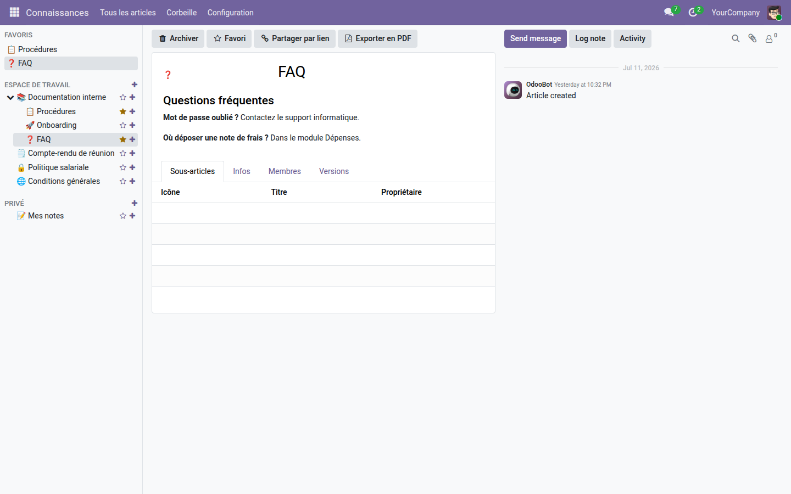

A hierarchical knowledge base for the whole team — unlimited articles, native rich editor, shared and private spaces, free in Odoo Community.
Odoo's Knowledge app has been reserved for the Enterprise edition since v16: on Community, internal procedures, operating instructions and team notes end up scattered across attachments, personal notes and external documents — impossible to find and never up to date. This app rebuilds a complete knowledge base for Odoo 19 Community, with no external dependency.
The Knowledge Base sidebar — the article tree on the left, the edited content on the right, without leaving the screen.

No inline comments anchored in the text, no properties or custom fields, no embedded views or items, no cover image on the article, no drag-and-drop in the sidebar (moving an article is done with a button). Fine-grained permissions per article, public sharing by link, version history, article templates and PDF export are in the Pro edition.
Pair this knowledge base with the Documents — DMS module (oski_dms) to file your documents in separate spaces, and with Knowledge Base Pro (oski_knowledge_pro) for per-article permissions, public sharing and version history. See the full suite on apps.odooskills.com.
Open-source app, LGPL-3 license — compatible with Odoo 19.0 Community & Enterprise. No external dependency. Support: apps@odooskills.com.